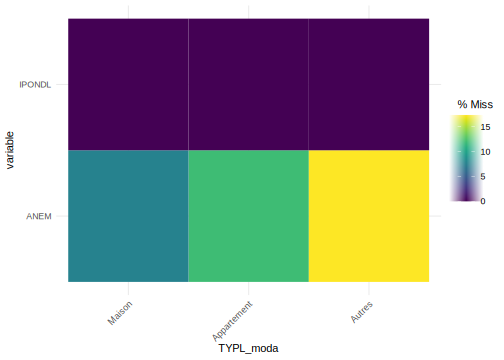

Section 3 Manipulation des variables
Dans la manipulation des variables, l’une des premières choses à réaliser est de les définir dans le bon format, variables quantitatives/continues ou variables qualitatives/catégorielles.
On l’a vu dans la section précédente, certaines variables sont encore codées comme des nombres entiers (“integer”) alors que sont des variables catégorielles. On va donc corriger cela.
RP <- RP %>% mutate(COMMUNE=as.factor(COMMUNE),
AEMM=as.factor(AEMM),
AEMMR=as.factor(AEMMR),
ANEMR=as.factor(ANEMR),
CATL=as.factor(CATL),
REGION=as.factor(REGION),
STOCD=as.factor(STOCD),
TYPL=as.factor(TYPL))On peut ainsi vérifier que ces variables sont bien des variables facteurs en regardant combien de modalités elles ont et quelles sont-elles. Par exemple, pour deux de nos variables ci-dessous :
nlevels(RP$REGION)[1] 1levels(RP$REGION)[1] "11"nlevels(RP$TYPL)[1] 6levels(RP$TYPL)[1] "1" "2" "3" "4" "5" "6"Si on n’avait pas mis l’option transformant les variables caractères en variables facteurs lors du chargement des données, on pourrait le faire maintenant en utilisant la fonction mutate_if ou la combinaison de mutate et across(where()) comme ceci RP %>% mutate_if(is.character, as.factor) ou RP %>% mutate(across(where(is.character), as.factor)).
On peut enfin vérifier quelles sont les variables numériques qui restent, en les sélectionnant avec select(where()) ou select_if() :
# RP %>% select_if(is.numeric) %>% head() %>% gt()
RP %>% select(where(is.numeric)) %>% head() %>% gt()| ANEM | IPONDL |
|---|---|
| 10 | 2.7933037 |
| 1 | 1.2335216 |
| 999 | 1.2335042 |
| 0 | 1.2335216 |
| 1 | 1.2335216 |
| 3 | 0.8138559 |
Plus généralement, il est souvent d’usage d’utiliser la fonction summary() pour donner une idée sur l’ensemble des variables, soit de la distribution pour les variables quantitatives, soit de la répartition des différentes modalités pour les variables qualitatives ; la fonction permet également de nous donner l’information sur l’existence et le nombre de valeurs manquantes pour chaque variable.
summary(RP) COMMUNE ARM IRIS ACHL
75056 : 555467 ZZZZZ :2295363 ZZZZZZZZZ: 581311 B12 :818140
92012 : 26820 75115 : 60460 913770114: 3552 B11 :649489
93048 : 20906 75118 : 49438 920120303: 3464 C100 :365485
92026 : 19890 75120 : 42859 771830102: 2806 A11 :334104
93066 : 19773 75113 : 42469 930700109: 2790 A12 :272452
95018 : 18179 75117 : 42407 770580104: 2761 C115 : 52035
(Other):2189795 (Other): 317834 (Other) :2254146 (Other):359125
AEMM AEMMR AGEMEN8 ANEM
0 : 305073 9 :1853886 40 :769947 Min. : 0.0
2015 : 206636 0 : 305073 25 :668407 1st Qu.: 3.0
2016 : 188969 8 : 297912 55 :438609 Median : 10.0
2017 : 159198 7 : 196169 65 :375519 Mean :118.9
2014 : 155990 6 : 132864 YY :305073 3rd Qu.: 28.0
2013 : 124943 5 : 42981 80 :175740 Max. :999.0
(Other):1710021 (Other): 21945 (Other):117535
ANEMR ASCEN BAIN BATI CATIRIS CATL
1 :588102 1: 937624 Z:2850830 Z:2850830 A: 30035 1:2545757
3 :519405 2:1608133 D: 5918 2: 37266
2 :459050 Y: 305073 H:2233566 3: 80286
0 :331413 Z: 581311 4: 187521
99 :305073
4 :277251
(Other):370536
CHAU CHFL CHOS CLIM CMBL CUIS
Z:2850830 1:966755 Z:2850830 Z:2850830 1: 379332 Z:2850830
2:817764 2:1028138
3:688397 3: 150297
4: 72841 4: 860916
Y:305073 5: 18780
6: 108294
Y: 305073
DEROU DIPLM EAU EGOUL ELEC
Z:2850830 18 :473997 Z:2850830 Z:2850830 Z:2850830
13 :452331
17 :307120
YY :305073
16 :286439
14 :261403
(Other):764467
EMPLM GARL HLML ILETUDM ILTM
16 :1327619 1:1506531 1: 537003 Z :2421856 Z :863675
ZZ : 863675 2:1039226 2:2008754 Y : 305073 3 :725591
YY : 305073 Y: 305073 Y: 305073 1 : 56301 2 :474425
21 : 117569 3 : 42715 1 :454269
15 : 105008 2 : 16778 Y :305073
22 : 82872 4 : 7948 4 : 24030
(Other): 49014 (Other): 159 (Other): 3767
IMMIM INAIM INEEM INP11M INP15M
1: 577892 1:479110 0 :2148455 0 :1958176 0 :1829727
2:1967865 2:676390 Y : 305073 Y : 305073 1 : 327706
Y: 305073 3:652878 1 : 298391 1 : 304764 Y : 305073
4: 59905 2 : 85141 2 : 210685 2 : 268584
5: 1536 3 : 12186 3 : 58780 3 : 91461
6:675938 4 : 1364 4 : 11010 4 : 21893
Y:305073 (Other): 220 (Other): 2342 (Other): 6386
INP17M INP19M INP24M INP3M
0 :1766013 2 :1183058 0 :1486207 0 :2275034
1 : 341311 1 :1066824 1 : 478506 Y : 305073
Y : 305073 Y : 305073 2 : 380933 1 : 226415
2 : 295837 3 : 203339 Y : 305073 2 : 42123
3 : 106336 4 : 66880 3 : 143992 3 : 2088
4 : 27314 5 : 13938 4 : 40074 4 : 79
(Other): 8946 (Other): 11718 (Other): 16045 (Other): 18
INP60M INP65M INP5M INP75M
0 :1715731 0 :1917057 0 :2181169 0 :2247449
1 : 529250 1 : 424697 Y : 305073 Y : 305073
Y : 305073 Y : 305073 1 : 261137 1 : 231763
2 : 297942 2 : 202800 2 : 92643 2 : 66397
3 : 2606 3 : 1114 3 : 10034 3 : 126
4 : 208 4 : 78 4 : 714 4 : 18
(Other): 20 (Other): 11 (Other): 60 (Other): 4
INPAM INPER INPER1 INPER2
1 :933808 1 :930543 1 :1286415 1 :1401005
2 :824575 2 :712282 0 : 609245 2 : 467215
0 :648315 3 :370524 2 : 442121 0 : 464663
Y :305073 4 :334420 Y : 305073 Y : 305073
3 :107490 Y :305073 3 : 162673 3 : 165457
4 : 26667 5 :136363 4 : 36238 4 : 37596
(Other): 4902 (Other): 61625 (Other): 9065 (Other): 9821
INPOM INPSM IPONDL IRANM
1 :961312 0 :1646565 Min. : 0.000 1 :2259196
0 :779020 1 : 451745 1st Qu.: 1.004 Y : 305073
2 :711470 Y : 305073 Median : 1.183 2 : 88870
Y :305073 2 : 301109 Mean : 2.068 3 : 74285
3 : 76984 3 : 108144 3rd Qu.: 3.106 4 : 69015
4 : 14898 4 : 28347 Max. :506.470 5 : 36523
(Other): 2073 (Other): 9847 (Other): 17868
METRODOM NBPI RECHM REGION SANI SANIDOM
M:2850830 03 :600847 0: 538158 11:2850830 0: 17456 ZZ:2850830
04 :519672 1: 95994 1: 111392
02 :473779 2: 89148 2:2416909
05 :343159 9: 140375 Y: 305073
01 :311807 Y: 305073
YY :305073 Z:1682082
(Other):296493
SEXEM STAT_CONJM STOCD SURF TACTM TPM
1:1429233 1:1028273 0 : 305073 4 :571276 11:1682082 1:1487709
2:1116524 2: 114351 10:1263064 3 :509245 12: 183924 2: 194373
Y: 305073 3: 274279 21: 545666 5 :424140 21: 554149 Y: 305073
4: 186866 22: 515399 Y :305073 22: 49403 Z: 863675
5: 251538 23: 152208 7 :285136 24: 18617
6: 690450 30: 69420 1 :267500 25: 57582
Y: 305073 (Other):488460 YY: 305073
TRANSM TRIRIS TYPC TYPL VOIT
Z :863675 ZZZZZZ : 951742 1: 633682 1: 915178 0: 780747
5 :773301 931411 : 5167 2: 318107 2:1867706 1:1117288
6 :664544 920841 : 4799 3:1555868 3: 37919 2: 540114
Y :305073 910351 : 4770 4: 35025 4: 13999 3: 107608
2 :106503 920331 : 4197 5: 3075 5: 6442 X: 305073
1 : 53186 931071 : 4099 Y: 305073 6: 9586
(Other): 84548 (Other):1876056
WC
Z:2850830
Mais attention, le problème ici est que cela nous donne des fréquences non pondérées pour l’ensemble de nos variables qualitatives, donc qui n’ont finalement pas grand sens. De plus, pour la seule variable numérique (hors pondération), ‘ANEM’, on voit que la moyenne est de 118,9 ans, ce qui signifierait qu’en moyenne l’ancienneté d’emménagement dans le logement en région Île-de-France est de 119 ans environ, hmhm !! On va voir que cela s’explique vraimsemblablement par des valeurs manquantes codées en “999”.
3.1 Manipulation des variables qualitatives
On peut d’abord travailler sur les variables qualitatives qui correspondent ici à l’essentiel de nos variables.
Comme on le sait, on peut regarder les différents niveaux pour chacune d’entre elles, avec la fonction levels(). Si on veut appliquer la fonction à l’ensemble de nos variables facteurs sans avoir donc à les indiquer une par une, on peut avoir recours à la fonction sapply() qui permet d’appliquer la fonction indiquée entre parenthèses (ici levels()) à tous les éléments de notre table de données.
# Pour info, ici cela donnerait cela :
RP %>% select(where(is.factor)) %>% sapply(levels)
# on peut même se passer de la sélection sur les variables :
# RP %>% sapply(levels)On peut ensuite vouloir retravailler les modalités de ces variables, car par exemple les modalités ne sont pas parlantes puisque nommées par des codes chiffres, ou parce que les modalités sont trop nombreuses et qu’on souhaiterait les rassembler pour une analyse ultérieure.
Par exemple, si l’on veut étudier la répartition des logements en Île-de-France selon leut type, on peut utiliser la variable TYPL :
levels(RP$TYPL)[1] "1" "2" "3" "4" "5" "6"Mais le moins qu’on puisse dire c’est que les 6 modalités de cette variable ne sont pas parlantes, on peut donc recoder les modalités de cette variable dans une étape DATA préalable comme ici ; on pourra bien sûr enchaîner plus tard les lignes de codes et réaliser cette étape dans une même procédure avec le tableau ou le graphique représentant cette variable.
Commençons ici par l’étape DATA :
# On cherche à quoi correspondent les modalités chiffrées de cette variable
# dans le fichier "meta"
meta %>% filter(COD_VAR=="TYPL") %>% select(COD_MOD, LIB_MOD)# A tibble: 7 x 2
COD_MOD LIB_MOD
<fct> <fct>
1 1 Maison
2 2 Appartement
3 3 Logement-foyer
4 4 Chambre d'hôtel
5 5 Habitation de fortune
6 6 Pièce indépendante (ayant sa propre entrée)
7 Y Hors résidence principale # On recode à partir de ces libellés, tout en regroupant certaines modalités
# qui sont très spécifiques et nous intéressent moins :
RP <- RP %>% mutate(TYPL_moda =as.factor(case_when(TYPL == "1" ~ "Maison",
TYPL == "2" ~ "Appartement",
TYPL %in% c("3","4","5","6") ~ "Autres")))
levels(RP$TYPL_moda)[1] "Appartement" "Autres" "Maison" Si l’on veut changer l’ordre des modalités, qui s’afficheront comme ci-dessus dans un tableau ou un graphique, on peut utiliser la fonction fct_relevel() du package forcats (à installer avant puis à appeler avant de l’utiliser) :
# install.package("forcats")
library(forcats)
RP <- RP %>% mutate(TYPL_moda = fct_relevel(TYPL_moda, c("Maison","Appartement","Autres")))
levels(RP$TYPL_moda)[1] "Maison" "Appartement" "Autres" Plus largement, pour travailler sur les variables qualitatives en particulier lorsqu’elles sont en format facteur, le package forcats est très utile. Outre une fonction de transformation d’une variable caractère en facteur (as_factor() proche de la version de baseR as.factor() utilisée juste au-dessus), elle contient plein d’autres fonctions : fct_collapse() utilisée à la fin de la commande précédente pour renommer ou regrouper des modalités d’une variable (au lieu de la double fonction as.factor() et case_when()) ; fct_relevel() utilisée également au-dessus pour trier les modalités comme on le souhaite ; fct_drop() pour enlever des niveaux de facteurs vides/sans effectifs ; fct_explicit_na() pour rendre les NA explicites en créant une modalité “(missing)” ; fct_reorder() et fct_reorder2() pour réordonner les modalités d’une variable, très utile pour les graphiques car utilisables directement dans ggplot() ; fct_lump() pour regrouper les modalités les plus communes (ou au contraire les moins communes) en lui indiquant entre parenthèses le nombre n= de modalités souhaitées ou la proportion minimum souhaitée prop=, et en sélectionnant la variable avec la fonction pull() avant car elle doit être en format vecteur et non data.frame ; ou encore fct_recode() pour changer le niveau des facteurs ; fct_other() ; fct_infreq() et fct_inorder() ; etc. Un bon récapitulatif de ces fonctions est présenté ici.
3.2 Manipulation des variables quantitatives
Comme nous l’avons vu plus haut, il n’y a que 2 variables quantitatives dans cette base et l’une est la pondération, donc on va regarder plus précisément la variable ANEM. Cependant, celle-ci aussi est particulière car c’est une variable numérique constituée d’entiers naturels (et non de valeurs réelles) qui vont de 0 à 120, avec une modalité “999” ; dans le dictionnaire des variables (ou le fichier des métadonnées) disponible également sur le site de l’Insee, on se rend compte que la variable a été pensée comme catégorielle avec des modalités d’abord codées comme “000”, “001”, etc. Et quand on regarde à quoi correspond la modalité “999”, on voit qu’elle permet de donner la situation d’un “logement ordinaire inoccupé”.
meta %>% filter(COD_VAR=="ANEM") %>% select(COD_MOD, LIB_MOD) %>% tail()# A tibble: 6 x 2
COD_MOD LIB_MOD
<fct> <fct>
1 115 Depuis 115 ans
2 116 Depuis 116 ans
3 117 Depuis 117 ans
4 118 Depuis 118 ans
5 120 Depuis 120 ans
6 999 Logement ordinaire inoccupéOn va recoder alors cette modalité comme des valeurs manquantes : dans R, ces valeurs sont notées NA. Cela nous permettra de la traiter comme une variable continue sur laquelle on pourra réaliser des statistiques sur sa distribution. Pour cela, dans une fonction mutate() combinée avec la fonction across() permettant de spécifier la variable sur laquelle on veut appliquer la transformation, on peut utiliser la fonction na_if qui permet de convertir des valeurs en NA.
RP <- RP %>% mutate(across(ANEM, ~ na_if(ANEM, 999)))On peut alors regarder rapidement la distribution de cette variable.
summary(RP$ANEM) Min. 1st Qu. Median Mean 3rd Qu. Max. NA's
0.00 3.00 8.00 13.49 20.00 117.00 305073 Si ce n’est pas la variable continue idéale (car encore une fois elle n’est pas à valeurs réelles), on va la prendre comme exemple ici pour étudier les différentes procédures que l’on peut réaliser dans une étape “Data wrangling” sur de telles variables.
3.2.1 Détecter et “visualiser” les valeurs manquantes
Même si l’information est donnée par la fonction summary() (mais qui nous donne d’autres informations), on peut également compter le nombre de valeurs manquantes NA pour chacune des variables avec la fonction colSums(), pour les avoir en proportion du nombre total d’observations (lignes), on peut utiliser la fonction colMeans() ; sinon ; on peut utiliser la fonction summarise combinée avec across(where()), ) :
colSums(is.na(RP)) COMMUNE ARM IRIS ACHL AEMM AEMMR AGEMEN8
0 0 0 0 0 0 0
ANEM ANEMR ASCEN BAIN BATI CATIRIS CATL
305073 0 0 0 0 0 0
CHAU CHFL CHOS CLIM CMBL CUIS DEROU
0 0 0 0 0 0 0
DIPLM EAU EGOUL ELEC EMPLM GARL HLML
0 0 0 0 0 0 0
ILETUDM ILTM IMMIM INAIM INEEM INP11M INP15M
0 0 0 0 0 0 0
INP17M INP19M INP24M INP3M INP60M INP65M INP5M
0 0 0 0 0 0 0
INP75M INPAM INPER INPER1 INPER2 INPOM INPSM
0 0 0 0 0 0 0
IPONDL IRANM METRODOM NBPI RECHM REGION SANI
0 0 0 0 0 0 0
SANIDOM SEXEM STAT_CONJM STOCD SURF TACTM TPM
0 0 0 0 0 0 0
TRANSM TRIRIS TYPC TYPL VOIT WC TYPL_moda
0 0 0 0 0 0 0 # Pour les avoir en proportion par rapport au nombre total d'observations
# et arrondies à 2 chiffres après la virgule :
round(colMeans(is.na(RP)*100), 2) COMMUNE ARM IRIS ACHL AEMM AEMMR AGEMEN8
0.0 0.0 0.0 0.0 0.0 0.0 0.0
ANEM ANEMR ASCEN BAIN BATI CATIRIS CATL
10.7 0.0 0.0 0.0 0.0 0.0 0.0
CHAU CHFL CHOS CLIM CMBL CUIS DEROU
0.0 0.0 0.0 0.0 0.0 0.0 0.0
DIPLM EAU EGOUL ELEC EMPLM GARL HLML
0.0 0.0 0.0 0.0 0.0 0.0 0.0
ILETUDM ILTM IMMIM INAIM INEEM INP11M INP15M
0.0 0.0 0.0 0.0 0.0 0.0 0.0
INP17M INP19M INP24M INP3M INP60M INP65M INP5M
0.0 0.0 0.0 0.0 0.0 0.0 0.0
INP75M INPAM INPER INPER1 INPER2 INPOM INPSM
0.0 0.0 0.0 0.0 0.0 0.0 0.0
IPONDL IRANM METRODOM NBPI RECHM REGION SANI
0.0 0.0 0.0 0.0 0.0 0.0 0.0
SANIDOM SEXEM STAT_CONJM STOCD SURF TACTM TPM
0.0 0.0 0.0 0.0 0.0 0.0 0.0
TRANSM TRIRIS TYPC TYPL VOIT WC TYPL_moda
0.0 0.0 0.0 0.0 0.0 0.0 0.0 # Ou en langage tidyverse sur les seules variables numériques :
RP %>% summarise(across(where(is.numeric), ~ sum(is.na(.))))# A tibble: 1 x 2
ANEM IPONDL
<int> <int>
1 305073 0Si votre base de données contient plusieurs variables avec un certain nombre de valeurs manquantes, il peut être intéressant d’en faire une analyse plus poussée. Différents packages existent pour détecter et visualiser les données manquantes. L’un d’entre eux est le package naniar : quelques fonctions permettent d’abord de décrire la base selon ses valeurs manquantes.
library(naniar)
# Ci-dessous : nombre de cellules du tableau ou de n_ij d'une matrice
# qui correspondent à des valeurs manquantes :
n_miss(RP) [1] 305073# Pour les avoir en proportion du nombre total de cellules du tableau
# et non des seules lignes comme précédemment,
# le résultat est déjà en pourcentage, sinon utiliser `prop_miss(RP)`)
pct_miss(RP) [1] 0.1528743# Ci-dessous : nombre de cellules du tableau ou de n_ij d'une matrice
# qui correspondent à des valeurs renseignées :
n_complete(RP) [1] 199253027#en proportion
pct_complete(RP) [1] 99.84713On peut ensuite visualiser le nombre de valeurs manquantes par variable, avec la fonction gg_miss_var() du même package.
# 1er type de visualisation des valeurs manquantes
RP %>% gg_miss_var()On peut également demander dans gg_miss_var() à ce que les valeurs soient en pourcentage, avec l’argument show_pct=TRUE.
On peut aussi réaliser des graphiques montrant le nombre de valeurs manquantes pour l’ensemble des variables numériques de la base, en fonction d’une autre variable de nature ‘factor’, avec l’argument fct= dans gg_miss_fct(). Cela est intéressant pour voir si certaines valeurs manquantes des variables se retrouvent davantage dans des modalités précises d’une autre variable. Par exemple, ici, selon le type de logement :
RP %>% select(where(is.numeric), TYPL_moda) %>%
gg_miss_fct(fct = TYPL_moda) On voit que les valeurs manquantes sont plus nombreuses en proportion pour la modalité “5” et sont moins nombreuses dans les modalités “1” et “3” ; elles ne se distribuent ainsi pas de manière uniforme selon la variable du type de logement.
Plus généralement, la fonction gg_miss_upset() de ce même package naniar permet de visualiser des dépendances entre les valeurs manquantes des variables qui en ont, ici, cela ne marchera donc pas puisque nous n’avons qu’une variable avec valeurs manquantes. Voici le code néanmoins :
RP %>% select(where(is.numeric)) %>% gg_miss_upset()library(VIM)
RP %>% select(where(is.numeric)) %>% aggr(sortVar=TRUE, only.miss = TRUE)Enfin, il est possible d’appliquer la fonction geom_miss_point() à une fonction ggplot, dans ce cas les valeurs manquantes de la ou des variables sont remplacées par des valeurs 10% plus basses que la valeur minimum observée des variables, et cela afin de les visualiser.
Il existe bien sûr bien d’autres packages, comme funModeling, Amelia et sa fonction missmap(), ou encore visdat et sa fonction vis_miss(). Enfin, d’autres packages comme VIM ou MICE permettent, non seulement de visualiser ces valeurs manquantes, mais également de leur appliquer des techniques pour les “gérer”, c’est ce que l’on va voir maintenant en résumé.
3.2.2 Gérer les valeurs manquantes
Il est bien de connaître le nombre et la proportion de valeurs manquantes dans nos données, comment ces dernières se répartissent entre elles, etc., mais il faut aussi comprendre quel impact elles peuvent avoir sur des analyses statistiques, de régressions ou autres algorithmes.
Dans une base de données tirée d’une enquête, les valeurs manquantes peuvent provenir d’une non-réponse de la part de l’enquêté (que ce soit un individu ou une entreprise), cette non-réponse pouvant être “totale” (on a aucune donnée pour cet enquêté alors qu’il fait partie de l’échantillon) ou “partielle” (on a une partie des réponses mais pas à toutes les questions et donc des variables parfois avec des valeurs manquantes) ; ou bien encore elles peuvent être dues à une mauvaise saisie de l’information par l’enquêteur. La pondération, si elle est présente dans une enquête, peut permettre de corriger cette non-réponse totale, voire partielle.
Les conséquences des valeurs manquantes dans une base de données dépendent de plusieurs choses : on doit d’abord se demander si l’information perdue aurait été pertinente et/ou aurait apporté un élément particulier/supplémentaire. Ensuite, la perte éventuelle d’information est-elle importante, en nombre/en proportion. Et enfin (et surtout), peut-elle créer un biais lors de l’estimation et précision du phénomène que l’on souhaite observer, décrire, analyser, etc. Selon l’importance de ces conséquences, il faut traiter ces valeurs manquantes, c’est-à-dire utiliser une procédure la plus adaptée possible selon le potentiel biais repéré.
Traditionnellement dans la littérature, on distingue 3 types de valeurs manquantes :
- valeur manquante entièrement due au hasard (‘MCAR’ pour Missing completely at random) : il n’y a pas de lien entre la valeur manquante pour une variable donnée et les autres variables, dit autrement la probabilité pour une variable qu’elle ait une valeur manquante est constante dans les données, elle ne diffère pas selon d’autres caractéristiques des individus ;
- valeur manquante due au hasard (‘MAR’ pour Missing at random) : il y a un lien entre la valeur manquante pour une variable donnée et les valeurs observées d’autres variables, c’est-à-dire que la probabilité pour une variable qu’elle ait une valeur manquante dépend d’autres variables (de leurs valeurs observées), elle ne sera donc pas la même selon les individus, c’est ce qu’on essayait de regarder lorsqu’on a utilisé plus haut la fonction
gg_miss_fct(fct=); - valeur ne manquant pas au hasard (‘NMAR’ pour Non missing at random) : il y a un lien entre la valeur manquante pour une variable et les valeurs manquantes/non observées d’autres variables. Ce sont celles qui risquent d’entraîner des biais importants si on ne les traite pas, c’est ce qu’on essayait de regarder plus haut également avec la fonction
gg_miss_upset()cette fois.
Comment alors les gérer ? En pratique, il est d’usage lorsque la proportion de valeurs manquantes ne dépasse pas 5% des données de ne rien faire de particulier ou simplement de les supprimer (vous pouvez pour la savoir utiliser les premières fonctions du package naniar présentées précédemment). Sinon, on essaye d’appliquer plusieurs méthodes, simples ou plus complexes.
Dans le cas de valeurs manquantes entièrement dues au hasard (MCAR) et/ou d’une faible proportion des valeurs manquantes dans le total de la table de données, on peut décider de supprimer toutes les lignes qui contiennent au moins une valeur manquante, afin d’avoir une table de données complètes, on peut utiliser la fonction na.omit() ou complete.cases() ; attention à ne pas remplacer votre table de données initiale en réalisant cette procédure.
RP_sansNA <- na.omit(RP)
# OU :
# RP_sansNA <- RP[complete.cases(RP), ]
# Pour vérification :
colSums(is.na(RP_sansNA)) COMMUNE ARM IRIS ACHL AEMM AEMMR AGEMEN8
0 0 0 0 0 0 0
ANEM ANEMR ASCEN BAIN BATI CATIRIS CATL
0 0 0 0 0 0 0
CHAU CHFL CHOS CLIM CMBL CUIS DEROU
0 0 0 0 0 0 0
DIPLM EAU EGOUL ELEC EMPLM GARL HLML
0 0 0 0 0 0 0
ILETUDM ILTM IMMIM INAIM INEEM INP11M INP15M
0 0 0 0 0 0 0
INP17M INP19M INP24M INP3M INP60M INP65M INP5M
0 0 0 0 0 0 0
INP75M INPAM INPER INPER1 INPER2 INPOM INPSM
0 0 0 0 0 0 0
IPONDL IRANM METRODOM NBPI RECHM REGION SANI
0 0 0 0 0 0 0
SANIDOM SEXEM STAT_CONJM STOCD SURF TACTM TPM
0 0 0 0 0 0 0
TRANSM TRIRIS TYPC TYPL VOIT WC TYPL_moda
0 0 0 0 0 0 0 On se retrouve alors avec une table de 2 545 757 observations (lignes), on a donc perdu 305 073 observations, soit 10.70% des observations de la table initiale, ce qui est cohérent avec ce qu’on avait retiré de notre première analyse de détection des valeurs manquantes.
Des techniques d’imputation simple peuvent également être utilisées. On peut par exemple remplacer les valeurs manquantes d’une variable quantitative par sa moyenne ou sa médiane, pour cela on peut utiliser la fonction replace_na() du package tidyr, ou impute() du package Hmisc, ou encore na.aggregate() du package zoo On donne ainsi une valeur “artificielle” pour remplacer la valeur manquante. Dans le cas de variables qualitatives, on peut, de même, imputer la modalité dominante (avec la fonction mode() du package Hmisc ; ou avec l’argument mode= du package zoo). Par exemple, voici les codes pour remplacer les valeurs manquantes de la variable ‘ANEM’ par sa moyenne (ici on ne fait pas tourner ces codes) :
# Comme les valeurs de la variable 'ANEM' sont des entiers naturels,
# il faut arrondir la moyenne à l'unité, sinon la fonction renvoie
# une erreur
RP %>% mutate(ANEM_bis = replace_na(ANEM, round(mean(ANEM, na.rm=TRUE), 0))) %>% select(ANEM, ANEM_bis)
library(Hmisc)
RP$ANEM_bis <- with(RP, impute(ANEM, mean))
library(zoo)
RP$ANEM_bis <- na.aggregate(RP$ANEM, FUN = mean)On peut néanmoins réaliser ce type d’imputation simple de manière un petit peu plus subtile. Par exemple, si la moyenne de la variable diffère sensiblement selon une autre variable (catégorielle), dans ce cas, on va plutôt remplacer les valeurs manquantes de la variable selon la moyenne associée à chaque modalité de cette autre variable en ajoutant un group_by() avant la fonction mutate() si on utilise la fonction replace_na() comme dans l’exemple précédent.
Si on ne veut pas supprimer ces lignes d’observations et perdre ainsi d’autres informations (celles des variables pour lesquelles la valeur était renseignée pour cette même observation), on peut simplement créer une variable indicatrice de valeur manquante, remplacer les NA par ‘999’ comme dans notre base de données actuelle pour des variables quantitatives, ou par une modalité ‘Manquant’ ou ‘Missing’ pour des variables qualitatives.
Plusieurs autres méthodes existent également dans le cas de valeurs manquantes dues au hasard (MAR), en voici la liste pour information et sans prétention d’exhaustivité : - analyse pondérée pour des valeurs MAR qui consiste à calculer la probabilité qu’une observation soit complète et ensuite à affecter à chacune des observations complètes, un poids inversement proportionnel à cette probabilité ; - imputation de la dernière observation pour des données temporelles ; - imputation “hot-deck” qui consiste à remplacer la valeur manquante par une valeur observée chez un autre individu ayant les mêmes caractéristiques, ou “cold-deck” (même démarche que précédement, sauf que la valeur imputée vient d’une autre source) ; - imputation par le “plus proche voisin” en utilisant une fonction de distance basée sur plusieurs autres variables/caractéristiques de l’individu ; - imputation par un modèle de régression où l’on va remplacer la valeur manquante par une valeur prédite obtenue par régression sur données complètes de la variable comportant des valeurs manquantes.
Il y a aussi des techniques plus complextes d’imputation multiple qui consiste à créer plusieurs valeurs possibles pour une valeur manquante d’une variable, cela peut être adaptée là aussi lorsque les valeurs manquantes sont dues au hasard (MAR).
Vous trouverez de multiples ressources sur internet dans des ouvrages libres d’accès, ou vous pouvez aller voir un des chapitres de l’ouvrage principal support du cours (Husson, 2018), avec des exemples d’utilisation.
3.2.3 Détecter et “visualiser” les valeurs aberrantes
Pour cela, on va utiliser une autre base, téléchargée sur opendatasoft à partir de la fonction créée lors de la séance 1 de M. Grasland. Cette base dont le nom est “aides-entreprises-covid-19-france” renseigne du nombre et du montant des aides financières accordées aux entreprises françaises durant la crise du covid_19, selon en particulier le secteur d’activité et la localisation géographique.
# Rappel fonction (soit vous l'avez encore dans votre environnement, soit
# vous l'avez sauvegardé et dans ce cas il faut l'appeler, soit vous devez
# refaire tourner les lignes de codes suivantes...)
get_data <- function(idtab, rows, start) {
url <- paste0("https://public.opendatasoft.com/api/records/1.0/search/?dataset=",idtab,"&q=&rows=",rows,"&start=",start,sep="")
x <- GET(url)
y <- fromJSON(rawToChar((x$content)))
don <- y$records$fields
return(don)
}
library(jsonlite)
library(httr)
dt_aidesCovid <- get_data(idtab = "aides-entreprises-covid-19-france",
rows=2000,
start=0)
dt_aidesCovid %>% glimpse()Rows: 1,680
Columns: 13
$ reg_code <int> 84, 84, 84, 84, 84, 27, 27, 27, 27, 24, 24, 24~
$ geo_point_2d <list> <46.09983, 5.34885>, <45.728000, 4.164813>, <~
$ naf_section_name <chr> "Commerce", "Industrie manufacturière", "Const~
$ nombre_entreprises <int> 2602, 1042, 3034, 6577, 3021, 61, 268, 45, 233~
$ plan <chr> "Fonds de solidarité", "Fonds de solidarité", ~
$ financial_support_count <int> 10424, 3820, 8936, 19967, 28020, 366, 2212, 19~
$ reg_name <chr> "Auvergne-Rhône-Alpes", "Auvergne-Rhône-Alpes"~
$ naf_section_code <chr> "G", "C", "F", "F", "I", "J", "R", "K", "L", "~
$ total_meuros <dbl> 31.889084, 9.551646, 13.922570, 33.039981, 247~
$ dep_name <chr> "Ain", "Loire", "Loire", "Rhône", "Savoie", "N~
$ iso3_code <chr> "FXX", "FXX", "FXX", "FXX", "FXX", "FXX", "FXX~
$ dep_code <chr> "01", "42", "42", "69", "73", "58", "58", "89"~
$ total <dbl> 31889084, 9551646, 13922570, 33039981, 2478684~dt_aidesCovid %>% head() %>% gt()| reg_code | geo_point_2d | naf_section_name | nombre_entreprises | plan | financial_support_count | reg_name | naf_section_code | total_meuros | dep_name | iso3_code | dep_code | total |
|---|---|---|---|---|---|---|---|---|---|---|---|---|
| 84 | 46.09983, 5.34885 | Commerce | 2602 | Fonds de solidarité | 10424 | Auvergne-Rhône-Alpes | G | 31.889084 | Ain | FXX | 01 | 31889084 |
| 84 | 45.728000, 4.164813 | Industrie manufacturière | 1042 | Fonds de solidarité | 3820 | Auvergne-Rhône-Alpes | C | 9.551646 | Loire | FXX | 42 | 9551646 |
| 84 | 45.728000, 4.164813 | Construction | 3034 | Fonds de solidarité | 8936 | Auvergne-Rhône-Alpes | F | 13.922570 | Loire | FXX | 42 | 13922570 |
| 84 | 45.871312, 4.640724 | Construction | 6577 | Fonds de solidarité | 19967 | Auvergne-Rhône-Alpes | F | 33.039981 | Rhône | FXX | 69 | 33039981 |
| 84 | 45.477437, 6.442872 | Hébergement et restauration | 3021 | Fonds de solidarité | 28020 | Auvergne-Rhône-Alpes | I | 247.868466 | Savoie | FXX | 73 | 247868466 |
| 27 | 47.115383, 3.504115 | Information et communication | 61 | Fonds de solidarité | 366 | Bourgogne-Franche-Comté | J | 0.736895 | Nièvre | FXX | 58 | 736895 |
Avant tout, comme indiqué dans la section précédente (2. Manipulation de la base), il faut comprendre quel est le format de ces données. Ici, les données sont micro-agrégées, c’est-à-dire qu’une observation est le croisement d’un secteur et d’un département ; il faut donc sommer les variables pour avoir une idée des montants de ces aides financières.
Par exemple, on somme dans le code suivant le montant total des aides en euros et milliers d’euros, puis le nombre total des aides et enfin le nombre total d’entreprise concernées par ces aides ; la fonction fmt_number() ajoutée à la fin du code permet simplement d’avoir une séparation visuelle par milliers (un blanc ici ; le format chez les anglo-saxons étant une virgule…), puisque nous avons ici des montants très importants !
dt_aidesCovid %>% summarise(total_aides=sum(total),
total_aides_meuros=sum(total_meuros),
nb_totales_aides=sum(financial_support_count),
nb_totales_entre=sum(nombre_entreprises)) %>% gt() %>%
fmt_number(columns = c("total_aides", "total_aides_meuros", "nb_totales_aides",
"nb_totales_entre"), sep_mark = " ", decimals = 0)| total_aides | total_aides_meuros | nb_totales_aides | nb_totales_entre |
|---|---|---|---|
| 35 490 463 923 | 35 490 | 10 531 765 | 2 016 218 |
On veut plus précisément étudier dans cette sous-section les possibles valeurs aberrantes. On peut alors afficher les valeurs maximum pour chacune de ces variables.
dt_aidesCovid %>% summarise(aides_max=max(total), aides_meuros_max=max(total_meuros),
nb_max_aides=max(financial_support_count),
nb_max_entre=max(nombre_entreprises)) %>% gt() %>%
fmt_number(columns = 1:4, sep_mark = " ", decimals = 0)| aides_max | aides_meuros_max | nb_max_aides | nb_max_entre |
|---|---|---|---|
| 1 649 963 187 | 1 650 | 184 009 | 35 383 |
Ou faire quelques graphs sur la variable du montant total des aides en milliers d’euros “total_meuros” pour mieux visualiser de possibles valeurs aberrantes, de manière générale avec un histogramme, ou ventilées par région avec des “boîtes à moustache” :
dt_aidesCovid %>% ggplot() + aes(x=total_meuros) + geom_histogram(bins=150)dt_aidesCovid %>% ggplot() + aes(x = reg_name, y = total_meuros) + geom_boxplot() +
coord_flip()On voit en effet quelques points qui semblent être des valeurs aberrantes ou “outliers” ; parfois, c’est à tel point qu’on n’arrive même pas à distinguer les différentes valeurs de la distribution marquées par le Boxplot et par conséquent les boxplot sont ramassées. Pour rappel, dans un boxplot, par défaut un point est affiché comme aberrant s’il est en dehors de l’intervalle suivant : \(I=[Q_{1}−1.5×IQR ; Q_{3}+1.5×IQR]\), IQR étant l’intervalle interquartile donc la différence entre Q1 et Q3.
Mais s’agit-il de “vraies” valeurs aberrantes ? Combien d’observations concernent-elles ? La fonction boxplot.stats() permet de récupérer les valeurs des observations indiquées comme aberrantes, comme cela on peut créer ensuite une variable indiquant si oui ou non l’observation a une valeur “aberrante”. Faisons-cela pour la variable “total_meuros” par exemple.
# On récupère les valeurs de la partie 'out' des sorties de la fonction
# 'boxplot.stats', qui correspondent aux valeurs de tout point de données
# qui se situe au-delà des extrêmes de la boxplot
val_outliers <- boxplot.stats(dt_aidesCovid$total_meuros)$out
# On crée une variable dans notre table d'"identification" de ces outliers
# avec comme modalité "vraie" si l'observation a une valeur "outliers",
# sinon "Faux"
dt_aidesCovid <- dt_aidesCovid %>%
mutate(total_meuros_outliers =
case_when(total_meuros %in% c(val_outliers) ~ "Vrai",
TRUE ~ "Faux"))
# Puis on regarde la répartition avec la fonction `tabyl()` du package `janitor()`
library(janitor)
dt_aidesCovid %>% tabyl(total_meuros_outliers) %>%
adorn_pct_formatting() %>% adorn_totals("row")# A tibble: 3 x 3
total_meuros_outliers n percent
<chr> <dbl> <chr>
1 Faux 1484 88.3%
2 Vrai 196 11.7%
3 Total 1680 - On y lit que pour cette variable, il y aurait près de 11,7% de valeurs aberrantes telles qu’indiquées par le boxplot, cela fait beaucoup ! On peut regarder plus précisément à quelles observations elles correspondent et à quel montant.
dt_aidesCovid %>% filter(total_meuros_outliers=='Vrai') %>%
select(total_meuros, naf_section_name, dep_name) %>%
arrange(total_meuros) %>% head(10) %>% gt()| total_meuros | naf_section_name | dep_name |
|---|---|---|
| 41.41726 | Transports et entreposage | Nord |
| 41.54758 | Commerce | Finistère |
| 41.70506 | Activités spécialisées, scientifiques et techniques | Bas-Rhin |
| 41.74750 | Hébergement et restauration | Aube |
| 42.43167 | Hébergement et restauration | Lot |
| 42.45356 | Hébergement et restauration | Eure-et-Loir |
| 42.94316 | Hébergement et restauration | Corrèze |
| 43.24990 | Hébergement et restauration | Haute-Loire |
| 43.32271 | Commerce | Morbihan |
| 43.44017 | Commerce | Calvados |
OK on voit donc que cette procédure attribue des valeurs aberrantes pour des valeurs au-dessus de “41.41726” et donc à des observations qui seraient intéressants néanmoins à conserver ; attention par conséquent à identifier les valeurs dites aberrantes, éventuellement avec plusieurs méthodes (cf. ci-dessous) et surtout à les comprendre, il ne s’agit pas juste de les identifier pour les exclure ensuite des analyses.
Il existe en effet bien d’autres méthodes (méthode basée sur les percentiles ; méthode de Hampel), ainsi que des tests : par exemple, le package outliers vous permet de tester si une valeur (max ou min) est bien une valeur aberrante avec la fonction grubbs.test() (attention bis : à utiliser avec grande précaution et beaucoup de parcimonie), ou avec le package EnvStats et la fonction rosnerTest() pour détecter plusieurs “outliers” à la fois.
Pour gérer ces variables aberrantes, on peut les supprimer bien sûr si l’on est sûr que la valeur de la variable n’est pas “normale”, par exemple si on a une variable de salaire avec des modalités inférieures à 0, oui dans ce cas ce sont des mauvais outliers (et d’ailleurs peut-être même pas identifiés comme tel statistiquement) et on peut les supprimer ; de même pour des variables de résultats économiques, on va souvent élaguer la distribution en retirant les 1% (par exemple) du bas et du haut de la distribution pour supprimer des potentiels outliers.
Sinon, on les isole en créant une variable dichotomique “0/1” ou “Faux/Vrai” ; ou on crée une variable qualitative avec plusieurs catégories.
Dans les graphiques, en particulier les boîtes à moustache, on peut les supprimer avec l’option outlier.shape = NA et mettre ensuite une échelle plus réduite (avec ylim=c(0,175)) pour que le graphique soit plus lisible, mais il faut alors bien préciser dans la légende que certaines valeurs ne sont pas visibles sur le graphique car retirées.
dt_aidesCovid %>% ggplot() + aes(x = reg_name, y = total_meuros) +
geom_boxplot(outlier.shape = NA) + coord_flip(ylim = c(0,175)) +
labs(title = "Distribution des aides financières en millions d'euros,
selon la région", y="", x="Région",
caption="Rq : les valeurs au-delà de 175 millions d'euros ne sont pas affichées sur le graphique.") +
theme(plot.caption = element_text(hjust=0))3.2.4 Découper en classes une variable quantitative
On peut enfin découper en classes une variable quantitative et en faire donc une variable qualitative. On utilise pour cela la fonction cut() du langage de base de R. On peut par exemple découper la variable selon les principaux indicateurs de la distribution.
library(rstatix)
dt_aidesCovid %>% get_summary_stats(total_meuros) %>% gt()| variable | n | min | max | median | q1 | q3 | iqr | mad | mean | sd | se | ci |
|---|---|---|---|---|---|---|---|---|---|---|---|---|
| total_meuros | 1680 | 0.006 | 1649.963 | 6.001 | 1.828 | 17.644 | 15.815 | 7.56 | 21.125 | 60.662 | 1.48 | 2.903 |
dt_aidesCovid$total_meuros_cat <- cut(dt_aidesCovid$total_meuros,
breaks = c(0,
quantile(dt_aidesCovid$total_meuros,0.25),
mean(dt_aidesCovid$total_meuros),
max(dt_aidesCovid$total_meuros)))
dt_aidesCovid %>% tabyl(total_meuros_cat) %>% adorn_pct_formatting() %>%
adorn_totals("row") %>% gt()| total_meuros_cat | n | percent |
|---|---|---|
| (0,1.83] | 420 | 25.0% |
| (1.83,21.1] | 901 | 53.6% |
| (21.1,1.65e+03] | 359 | 21.4% |
| Total | 1680 | - |
On a une classe majoritaire (du Q1 à la moyenne), mais cela nous permet de distinguer 2 classes pour lesquelles le montant des aides financières est très faible ou au contraire très élevé.
À noter que si la variable quantitative en question a des valeurs manquantes, il faudra utiliser la fonction fancycut() ou wafflecut() du package fancycut, l’inconvénient est que cela nous oblige à indiquer les valeurs des différents indicateurs de la distribution. Pour trouver le même résultat que précédemment, le code serait alors le suivant :
library(fancycut)
dt_aidesCovid$total_meuros_cat1 <- fancycut(dt_aidesCovid$total_meuros, '1'='(0,1.83]',
'2'='(1.83,21]', '3'='(21,1.64e+03]',
na.bucket='Manquant')
dt_aidesCovid %>% tabyl(total_meuros_cat1) %>% adorn_pct_formatting() %>%
adorn_totals("row") %>% gt()